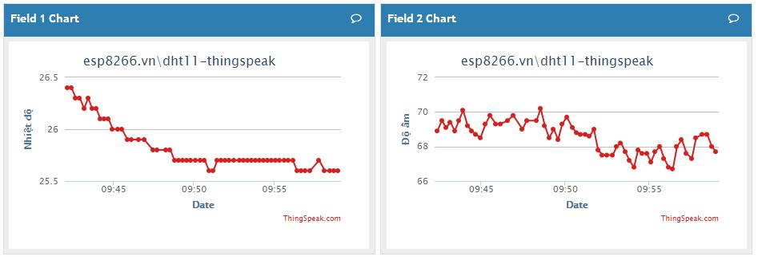
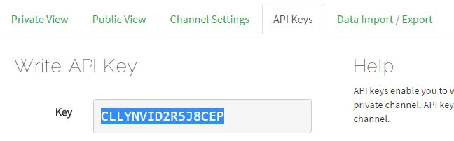
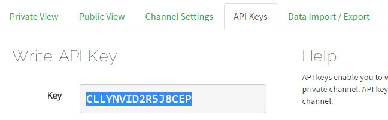

Đo nhiệt độ, độ ẩm và gởi lên Thingspeak¶
Demo¶
Chuẩn bị¶
| Tên board mạch | Link |
|---|---|
| Board IoT Wifi Uno | https://iotmaker.vn/esp8266-iot-wifi-uno.html |
| Cảm biến nhiệt độ DHT11 | https://iotmaker.vn/cam-bien-nhiet-do-do-am-dht11.htmlml |
Đấu nối¶

Cài đặt thư viện¶
| Thư viện | Link |
|---|---|
| DHT | https://github.com/adafruit/DHT-sensor-library |
| ThingSpeak | https://github.com/mathworks/thingspeak-arduino |
Lập trình¶
#include <DHT.h>
#include <ESP8266WiFi.h>
//DHT config
#define DHTPIN 4 // what digital pin we're connected to
//#define DHTTYPE DHT11 // DHT 11
#define DHTTYPE DHT22 // DHT 22 (AM2302), AM2321
//#define DHTTYPE DHT21 // DHT 21 (AM2301)
DHT dht(DHTPIN, DHTTYPE);
// Wi-Fi Settings
const char* ssid = "YOUR-WIFI-SSID"; // your wireless network name (SSID)
const char* password = "YOUR-WIFI-PASS"; // your Wi-Fi network password
WiFiClient client;
// ThingSpeak Settings
const int channelID = YOUR-CHANNEL-ID; //
String writeAPIKey = "YOUR-API-KEY"; // write API key for your ThingSpeak Channel
const char* server = "api.thingspeak.com";
const int postingInterval = 2 * 1000; // post data every 2 seconds
void setup() {
Serial.begin(115200);
dht.begin();
Serial.print("Connecting");
WiFi.begin(ssid, password);
while (WiFi.status() != WL_CONNECTED) {
Serial.print(".");
delay(100);
}
Serial.println("\r\nWiFi connected");
}
void loop() {
// wait and then post again
delay(postingInterval);
float temp = dht.readTemperature();
float humi = dht.readHumidity();
if (isnan(temp) || isnan(humi)) {
Serial.println("Failed to read from DHT sensor!");
return;
}
if (client.connect(server, 80)) {
// Construct API request body
String body = "field1=" + String(temp, 1) + "&field2=" + String(humi, 1);
client.print("POST /update HTTP/1.1\n");
client.print("Host: api.thingspeak.com\n");
client.print("Connection: close\n");
client.print("X-THINGSPEAKAPIKEY: " + writeAPIKey + "\n");
client.print("Content-Type: application/x-www-form-urlencoded\n");
client.print("Content-Length: ");
client.print(body.length());
client.print("\n\n");
client.print(body);
client.print("\n\n");
Serial.printf("Nhiet do %s - Do am %s\r\n", String(temp, 1).c_str(), String(humi, 1).c_str());
}
client.stop();
}
Lưu ý¶
- Tạo tài khoản ThingSpeak và New Channel để lấy
channelIDvàwriteAPIKey
 

Đừng quên chỉnh sửa lại thông tin WiFi và ThingSpeak trong code.
Bạn có thể dùng module DHT11, DHT21 hoặc DHT22 đều được.
- Chúng cơ bản khác nhau ở dải đo và... giá thành thôi.
- Chọn module bạn dùng ở dòng
#define DHTTYPE DHTxx